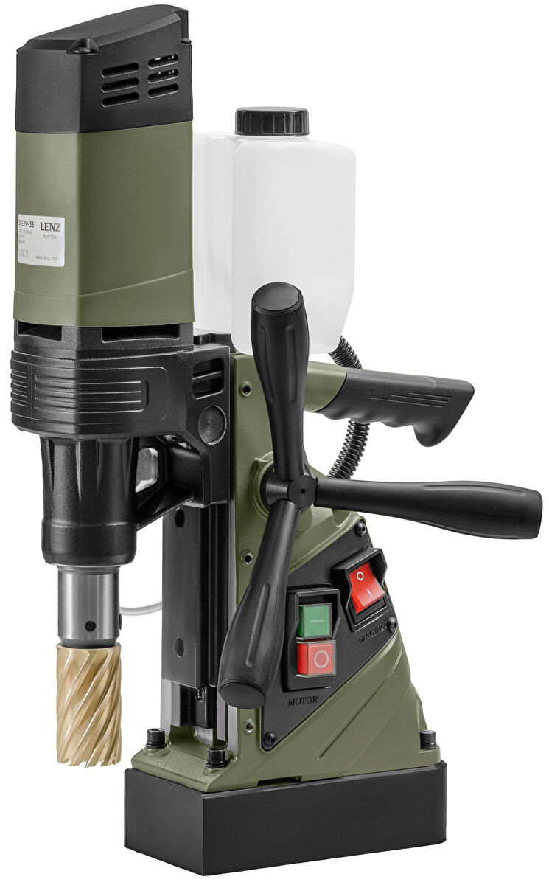
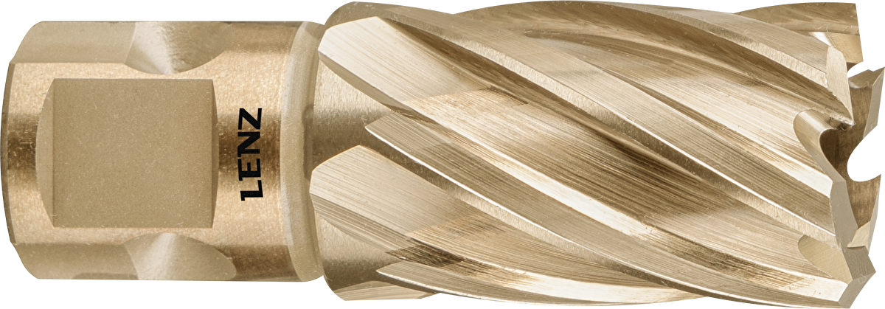
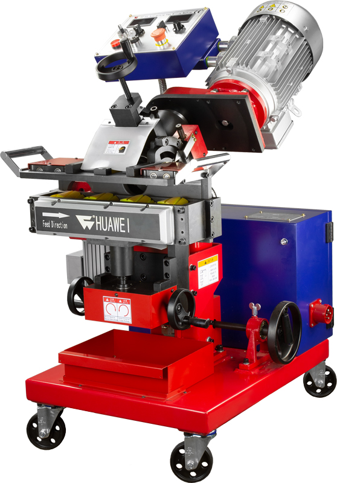
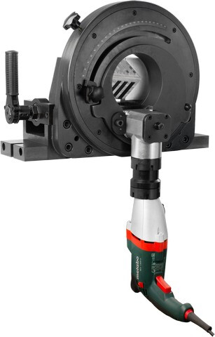
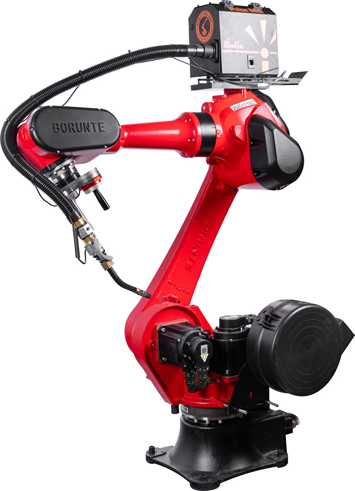
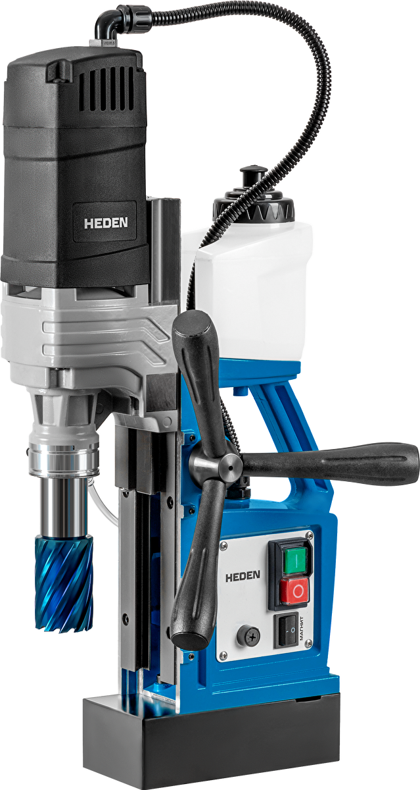

LENZ · STEYR-35
Магнитный сверлильный станок STEYR-35
- Диаметр сверления 35 мм
- Шпиндель Weldon 19
- Мощность 1 100 Вт
47 999 ₽Цена с НДС
Станки, режущий инструмент и оснастка для заводов, монтажных бригад и инженерных подразделений. Подбор по задаче, реальные остатки, поставка с НДС.

Крупный предмет, короткое название, количество — без маркетплейсного шума и декоративных пиктограмм.
Магнитные и стационарные · до Ø100 мм
390 позиций →HSS-XE и твердосплав

309 позиций →Фаска до 60 мм

334 позиции →Трубы Ø16–600 мм

206 позиций →Ячейки и манипуляторы

55 позиций →Card B: инженерная сетка, фиксированные зоны данных и ускоренное сравнение технических параметров.

390 позиций · 87 в наличии. Фильтры отвечают рабочим параметрам, а не внутренней структуре данных.
Ключевые параметры выровнены для быстрого чтения и сравнения между моделями.
Пришлите материал, диаметр и режим работы. Инженер подберёт оборудование, совместимую оснастку и зафиксирует сроки поставки.